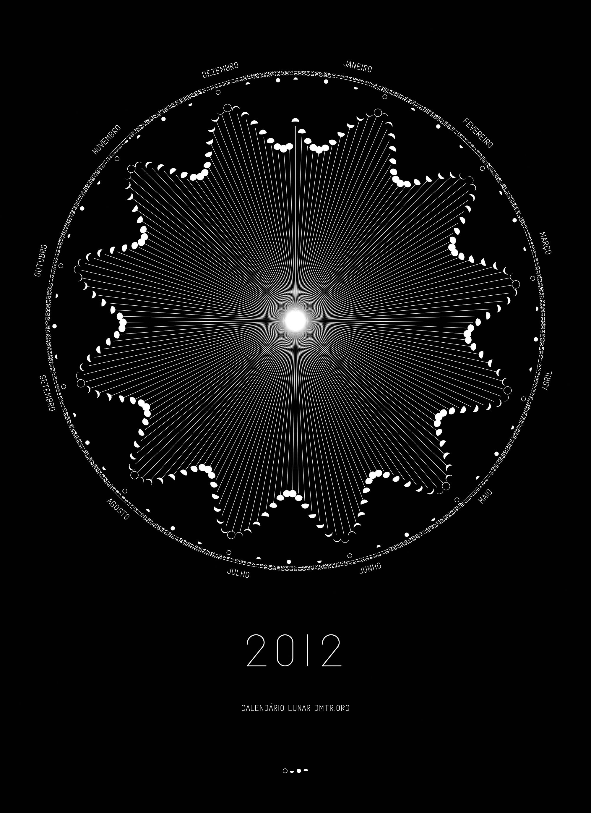
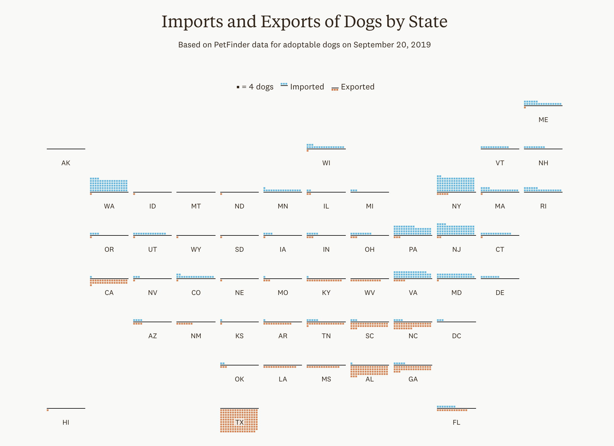
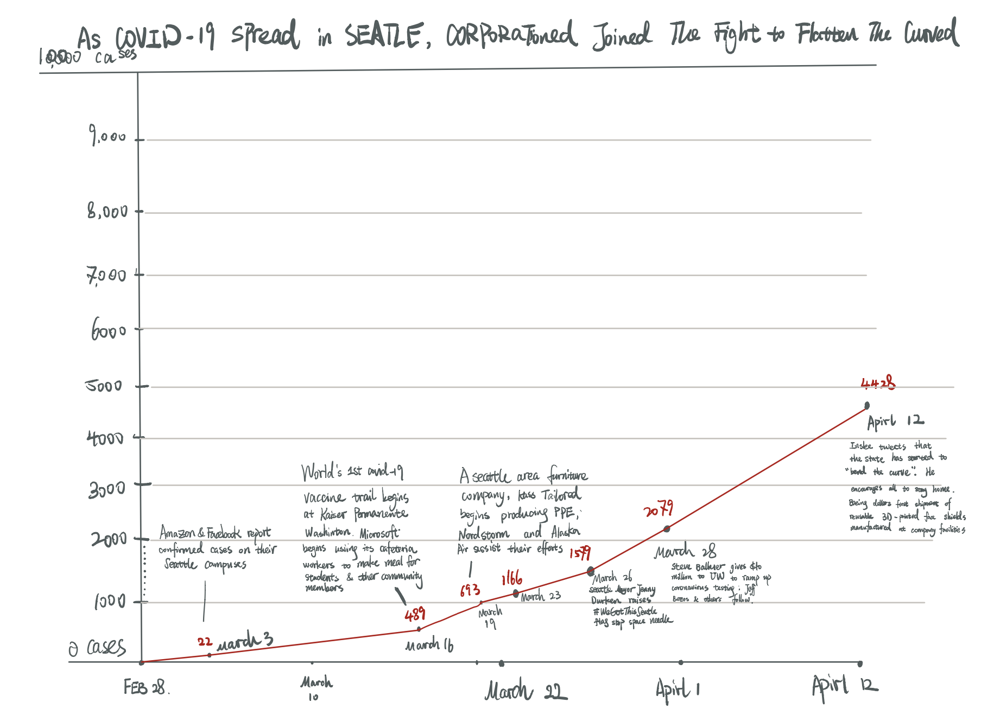
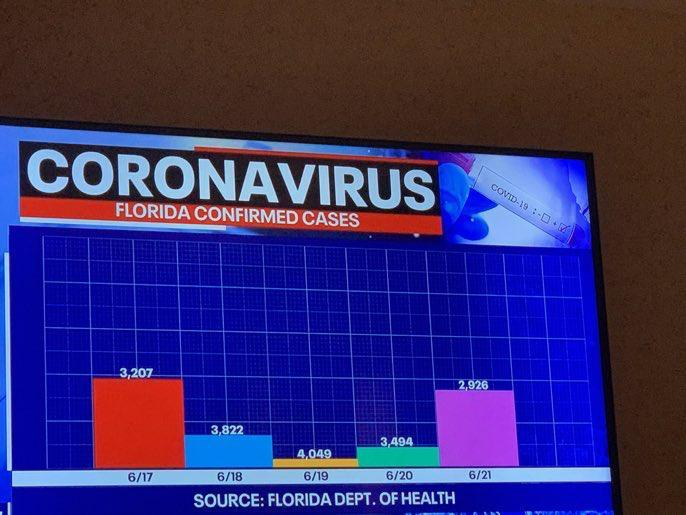

Good Design 1: Census Undercount
 Source
Source
The purpose of the graph is to show the ongoing census count status, and the audience is the Trump Administration. Census undercounts or overcounts influence federal funding to states which will affect public health programs, public school systems, and other services because incorrect census counts cause poor allocation of federal resources. The purpose of the visual is to show the harmful effects of the Trump administration pushing the Census Bureau to end the count early, because as of September 23rd, 37 states are not on track to collect responses from 99% of addresses by September 30th, the current end of the census count. The visual shows the predicted percentage of addresses that will be uncounted at the end of the census. The visualization encodes US states and the percentage of addresses currently uncounted, and the projected model for the percentage that will still be uncounted, and dates ranging from September 10th to September 30th. The visualization encodes states by using small multiples with graphs for each state in the shape of the US. Each graph is a line chart with percentage uncounted on the y axis and date on the x axis. Color encoding is used with orange for states that are not on track and gray for states that are on track for collecting 99% of addresses. Readers can compare state census progress and see trends through clusters of states that are or are not on track. The graph is truthful, using forecasted data from a study done by the American Statistical Association. The graph is beautiful and functional, with a minimal design that is intuitive to read. It is also insightful and enlightening in that it draws attention to the harmful effects of ending the census early and the percentage of addresses that would be left uncounted. Given that it clearly shows its message, is straightforward to read, and conveys its message that many addresses will be left uncounted on September 30th, it is a good visualization.
Good Design 2: Moon Phases
 SourceThe audience would be astrology enthusiasts or people drawn to nature. The visualization provides a detailed time chart to observe the moon. By looking at the graph, people can know what dates are the full moon, eclipse, etc. We also find the pattern of the moon and its distance to the earth. The data encoded in the visualization is nominal. The visualization uses shape channels to denote the different phases of the moon. It also uses position channels to present how the changing distance between Moon and Earth affects the moon phase. The visualization also uses arc position channels to show how the distance between the Moon and Earth changes within a year. Readers see trends in the visualization. Concerning the five principles, I think the designer did a great job maintaining truthful information and very functional. It is undoubtedly beautiful with its simplistic aesthetic. The contrast between black and white just builds the mysterious or hardcore sci-fi vibe we always associate with the universe. Therefore, I think it is a good visualization.
Good Design 3: Dog Trade
 SourceThis visualization aims to show the number of dogs imported and exported from each US state, and hopes to shed some light on the question of where adopted dogs come from when they aren’t local, and the trends of where dogs are transported around the country. It encodes this data using small multiples with a waffle chart representing the data for each state. The visualization is functional in that it allows for easy lookup and trend spotting, and also lets the viewer make easy comparisons for each data metric between states. The states are also arranged geographically in a tile grid map so that each state’s graph is in a position relatively similar to where that state is located in in the country. This makes it easier for the viewer to find a particular state they’re looking for, and also helps the viewer look for any geographical or regional trends as well. The graph also does a good job at separating the two pieces of numerial data shown for each state, by dividing them with a line, showing imported dogs above the line and exported dogs below the line. This helps the viewer make direct comparision of the imports between states and the exports between states. This presentation does hinder comparison of the total imports and exports between states, however this type of comparison is not as important for the purpose of this visualization. The visualization is also beautiful as it uses a simple design and clear color encoding to distinguish the two data metrics. The viewer is able to clearly identify states which export or import a large numebr of dogs, and the viewer can clearly see geographical patterns in how the southern states do more exporting of dogs while the northern states do more importing.
Bad Design 1: Texas COVID Hospitalizations
 Source
Source
The purpose of this graph is to give updates on the coronavirus hospitalizations in DFW, Houston, San Antonio, Austin, and El Paso, and statewide from May 31, 2020 to present. The data used is from the Texas Department of State Health Services. The audience is Texas residents who want updates on cases within their state as the graph is found on NBC DFW. The designers of this graph use a line chart to encode the time series data and colors to indicate which region each line represents. The x axis is time, which would in this case is a quantitative variable, and the x axis is the number of hospitalizations which is also quantitative. Using this graph, readers can see hospitalizations by region, which is a sign there are more cases in the region, and to see when hospitalizations peak or are at a low. This visualization uses data is from a reliable source and the report mentions that there was a dip in numbers in July 23 due to incomplete data rather than deceiving the reader into thinking there was a dip due to a decrease in cases. The visualization is easy to read with clearly different colors and labels, and it has a minimal design. It is insightful in that its goal is to show viewers updates that give them an understanding of how the coronavirus situation is in their region and statewide and can be enlightening in that it can convince readers of the importance of mask wearing and social distancing given the severity of the situation. This visualization’s strengths are that it displays important news and that the design would be clear and functional if not for some the design flaws. One flaw is that the y axis is misleading because the height between 100 and 1,000 is the same as the height between 1,000 and 9,000 but the difference is far greater. Because this difference in values is not accurately reflected in the y axis, it looks like statewide the hospitalizations are not that high, but the numbers are multiple times higher than any individual region. Given that the y axis is not evenly divided, it is difficult to compare how different regions are encoded because the graph has gray horizontal lines that get increasingly closer together towards 1,000 and 10,000.
Redesigns


* Best Redesign *
For my redesigns, two of them are line graphs using color encoding like the original, one is a stacked bar chart that has color encoding, one is a stacked area chart, and one is a heat map that uses square areas and color gradient encoding. Among these, I think the stacked area chart would be best to address the problem. It generally uses the same color scheme as the original, each color representing one region, though one difference is that instead of a color representing statewide, purple represents hospitalizations in the state not including the numbers in the five regions because stacked up together all areas equal the statewide number of hospitalizations. My design changes the y axis so that the distances between the numbers are all equally proportioned, and it is easier to see how much each region makes up of statewide hospitalizations. The tradeoff that I did have to make is that it’s more difficult to tell the number of individual hospitalizations at certain points in time because it’s stacked as opposed to the original where the line would clearly indicate how many there were. For example, to tell how many cases there were in DFW on July 12th, one would have to estimate that it is the difference between 2650 and 5000. However, I found that this chart was best in being able to show both statewide and region numbers on the same graph with an evenly distributed y axis.
Bad Design 2: Seattle COVID Cases
 Source
Source
Dissecting VisualizationThe audience is the public, specifically the reader of Fortune magazine. This chart, published in the May 2020 edition of Fortune magazine, attempts to show how Seattle flattened its Covid-19 curve. Still, since the data didn’t support that conclusion, they resorted to using variable y-axis values to convince the reader that the curve was flattening. The chart tries to convey the message that Seattle was flattening their Covid-19 curve. The visualization tries to encode quantitative data, specifically temporal data that due to time interval.
Further Analysis
The x-axis is the time interval from February 28 to April 12. The y-axis is the Covid-19 cases. Without line marks, the visualization connects plotted points with line segments. The sequence of time-series data becomes easy to follow. It displays the overall shape of the data and the general trend. It uses a number instead of point marks between line segments, which is more accessible for people to find the number of cases. Lastly, it uses description channels to elaborate on the data points. Readers need to compare values on the different time intervals and see the trends of coronavirus cases.
Further Analysis
According to the above analysis, it is a bad visualization, precisely due to its untruthfulness.
Redesigns
Redesign 1

Redesign 2
Redesign 3

* Best Redesign *
Since the original graph is a straightforward line chart based on temporal quantitive data, there is not much creative design space. I decide to stick with the line charts and experiment with the x, y-axis, and line mark. For my redesign 1 and 2, I decided to redesign the y-axis from 0 cases to 10,000 cases, the same range as the original visualization. Instead of using a logarithmic scale, I switch to a linear scale. I did so because the log scale displays numerical data over a wide range of values in a compact way. However, I think it exaggerates the early stage of the curve and undermines the later stage's significance. I maintain the color encoding for the line mark to be red because it emphasizes the severity of the current situation. Then I notice that the original curve doesn't provide the data behind the visualization besides a few marked out numbers. Besides the numerical point labeled, it is basically line segments connecting points together. So I decided to experiment by intentionally picking and leaving numerical data, specifically data for April 10. As for redesigns 1 and 2 show, data point selection plays a significant role in influencing the overall trend.
I think my redesign 3 is the best. For redesign 3, I switch my y-axis to a linear scale from 0 to 5000 cases because I believe it most objectively visualizes the data. It presents the actual issues without visual manipulation and reports what had actually happened, leaving more space for readers to think and reflect. I believe my redesign improves the most on truthful principles compared to the original. Besides, I also cut off the redundant textual labels to make the visualization more aesthetically pleasing. However, it compromises, leaving out background information on what the states and companies have done to fight against Covid-19.
Bad Design 3: Florida COVID Cases
 SourceThis visualization aims to present the number of confirmed COVID cases in the state of Florida over a 5-day period. The audience is most likely composed of Americans, and specifically those living in Florida. The data is encoded using a bar chart, with the height of each bar supposably representing the number of cases on a given day. When viewing this visualization, the reader will perform comparison of the bar heights and examine the overall trend of the bars, to see if there’s a pattern in the fluctuation of confirmed COVID cases. From the graphic, it appears to imply that the number of cases start high, went down, and then came back up over this 5-day period. The most noticeable issue with this visualization is that the height of the bars in the bar chart do not accurately reflect the data. It fails to follow the truthful principle of design, which states that the visualization should be an honest representation of the data based on thorough research. While the numbers may be accurately researched, the height of the bars mislead the viewer into reading a certain pattern into the data, one different from reality. There appears to be no correlation between the height of the bars and the number reported, as the bar representing 3,207 cases is higher than the one with 2.926 cases but lower than the one with 4.049 cases. Another problem with this visualization is the use of the additional channel of color, which is unnecessary as it does not convey any additional information. Each bar in the graph is given a different color seemingly at random with no relationship to the data. The grid in the background is also unnecessarily detailed, and the smaller grid lines especially don’t add much to help the viewer read or interpret the data.
Redesigns

* Best Redesign *
I experimented with a few different ways of visualizing the data in a more accurate and aesthetically pleasing way. The redesign I went with in the end is a bar graph like the original, but improved for the issues mentioned earlier. In my bar graph, i correct the height of the bars so that they actually reflect the number of cases for each day, with the actually number of cases listed above each bar to make it more explicit. I also kept all the bars the same color and got rid of the grid lines behind the bars to get rid of any distracting details and keep it as simple and clear as possible. I think my redesign is better and more clear than the original graph, most importantly because of the correct bar heights which more accurately reflect the trend of COVID cases. In fact, with the bars corrected, the trend appears to be almost the oppsite of the pattern observed in the original visualization. One trade-off with my redesign is that it might not be as visually engaging to the audience since it isn’t very colorful. The original graph has many colors and might grab the attention of the viewer, however I believed it would better to simplify the colors for the sake of clarity, which I thought was more important than how attention-catching the design might be. Another trade-off is that without the grid lines, it may be harder for the viewer to compare the bar heights precisely, however I think that this is compensated by the number of cases being listed explicity above each bar. Having both these indicators for comparison might be slightly redundant, and so I only kept one.